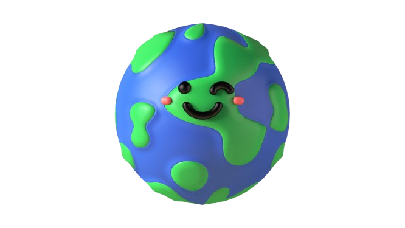
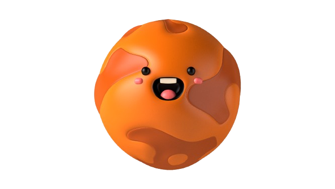
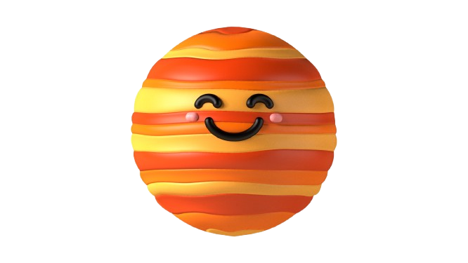
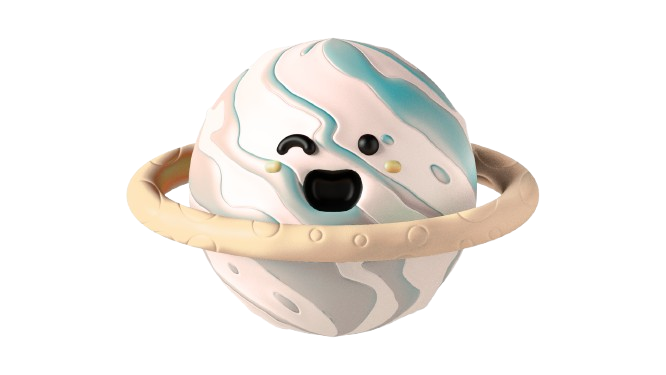
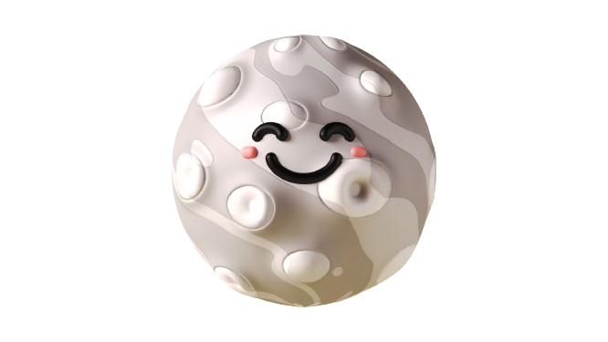

Mercury
The smallest planet and the closest one to the Sun.
Visit MercuryOur solar system is a fascinating place made up of the Sun, eight planets, their moons, and many smaller objects. Each planet has its own unique features and secrets to discover. Pick a planet below to learn more about it!
The smallest planet and the closest one to the Sun.
Visit Mercury
A rocky planet with thick clouds and intense heat.
Visit Venus
Our home, with oceans, land, and life.
Visit Earth
A cold, rocky planet with huge canyons and dust storms.
Visit Mars
The largest planet, known for its bands and giant storms.
Visit Jupiter
A gas giant with bright rings made of ice and rock.
Visit Saturn
An icy planet that rotates on its side.
Visit Uranus
A cold, blue planet with powerful winds.
Visit Neptune
Earth's natural satellite, with a surface full of craters.
Visit the Moon
The star at the center of our solar system.
Visit the SunPress the button to see the planets move!